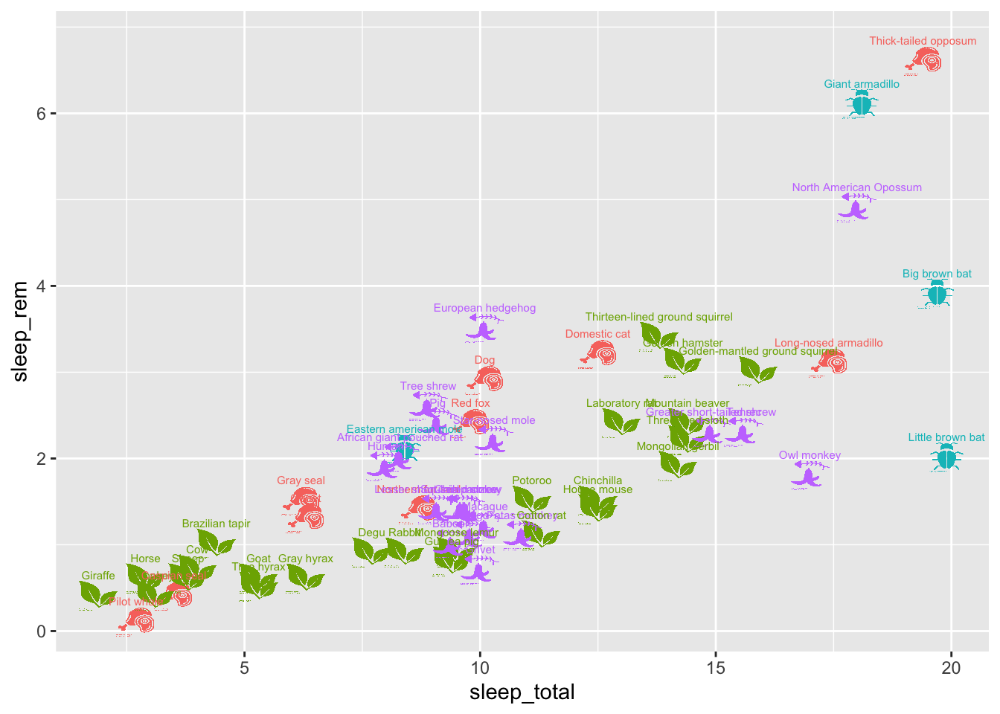
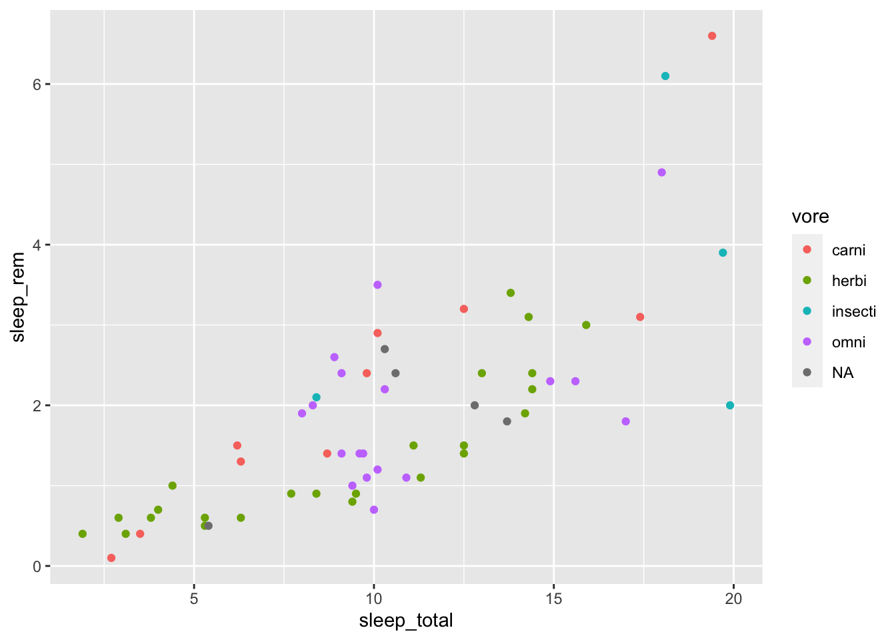
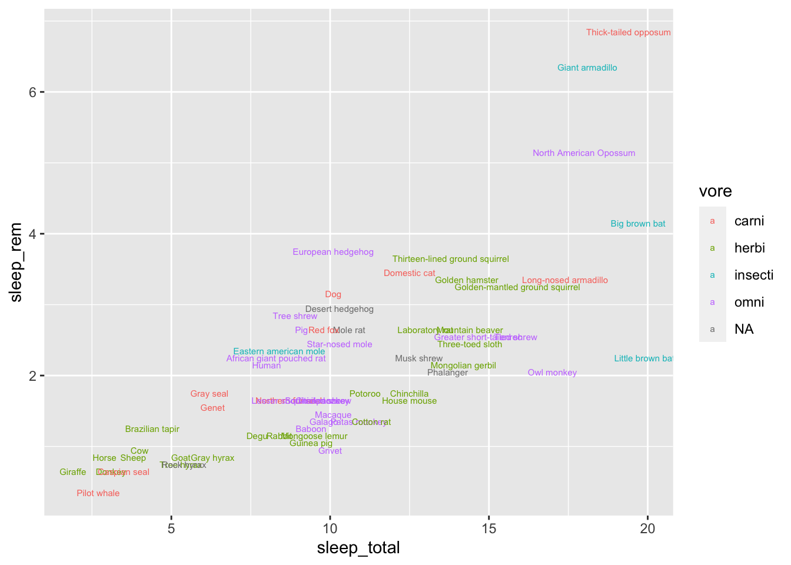
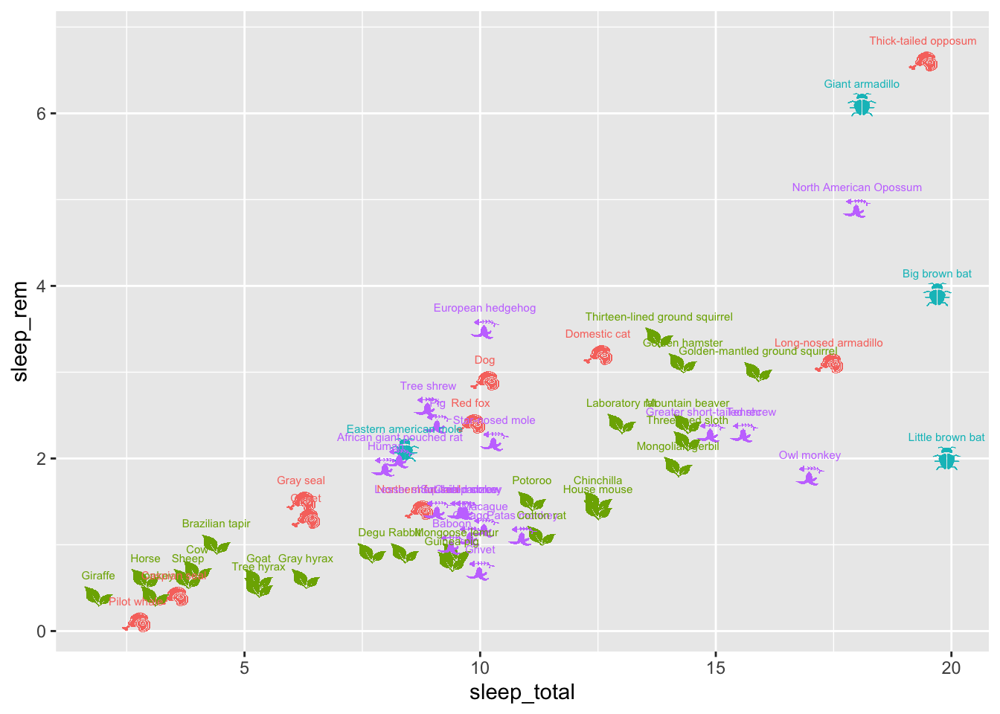
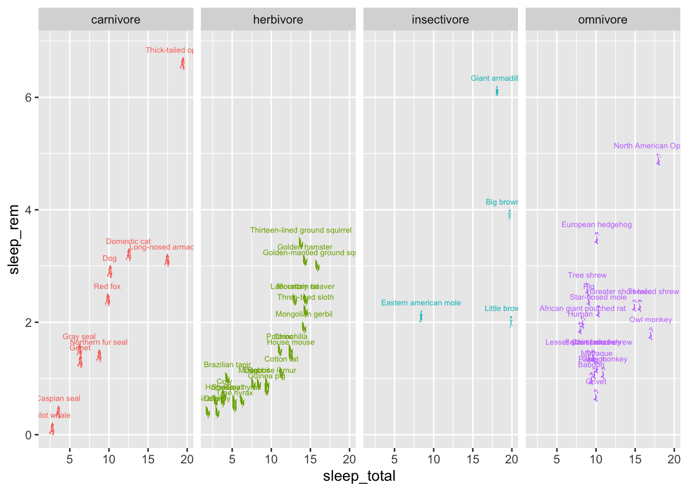

library(tidyr)
library(dplyr)
library(ggplot2)
glimpse(msleep)## Rows: 83
## Columns: 11
## $ name <chr> "Cheetah", "Owl monkey", "Mounta…
## $ genus <chr> "Acinonyx", "Aotus", "Aplodontia…
## $ vore <chr> "carni", "omni", "herbi", "omni"…
## $ order <chr> "Carnivora", "Primates", "Rodent…
## $ conservation <chr> "lc", NA, "nt", "lc", "domestica…
## $ sleep_total <dbl> 12.1, 17.0, 14.4, 14.9, 4.0, 14.…
## $ sleep_rem <dbl> NA, 1.8, 2.4, 2.3, 0.7, 2.2, 1.4…
## $ sleep_cycle <dbl> NA, NA, NA, 0.1333333, 0.6666667…
## $ awake <dbl> 11.9, 7.0, 9.6, 9.1, 20.0, 9.6, …
## $ brainwt <dbl> NA, 0.01550, NA, 0.00029, 0.4230…
## $ bodywt <dbl> 50.000, 0.480, 1.350, 0.019, 600…How does sleep_rem compare to sleep_total across species?
msleep %>%
ggplot(aes(x = sleep_total,
y = sleep_rem)) +
geom_point()
Any relation to what they eat?
msleep %>%
ggplot(aes(x = sleep_total,
y = sleep_rem,
color = vore)) +
geom_point()
Who are those outliers?
msleep %>%
ggplot(aes(x = sleep_total,
y = sleep_rem,
color = vore)) +
geom_text(aes(label=name),
nudge_y = 0.25,
size = 2)
Can I save space on the legend by using icons to encode vore?
library(stringr) # for string manipulation
library(ggimage) # for custom icons##
## Attaching package: 'ggimage'## The following object is masked from 'package:ggpubr':
##
## theme_transparentmsleep %>%
# Get rid of rows with missing `vore` values
drop_na(vore) %>%
# Slight re-encoding of `vore` values (adding "vore" to the end)
# and then adding an image column to map each species to the appropriate icon
mutate(vore = paste(vore, "vore", sep = ""),
image = paste(vore, ".png", sep = "")) %>%
# And now we plot!
ggplot(aes(x = sleep_total,
y = sleep_rem,
color = vore)) +
# Add the image
geom_image(aes(image = image), size=.03) +
# And the text, nudged just a bit so it doesn't overlap the image
geom_text(aes(label = name),
nudge_y = 0.25,
size = 2) +
# Drop the legend
theme(legend.position = "none")
facet_grid on voreCan I fix the overplotting by faceting on vore?
library(stringr) # for string manipulation
library(ggimage) # for custom icons
msleep %>%
# Get rid of rows with missing `vore` values
drop_na(vore) %>%
# Slight re-encoding of `vore` values (adding "vore" to the end)
# and then adding an image column to map each species to the appropriate icon
mutate(vore = paste(vore, "vore", sep = ""),
image = paste(vore, ".png", sep = "")) %>%
# And now we plot!
ggplot(aes(x = sleep_total,
y = sleep_rem,
color = vore)) +
# Add the image
geom_image(aes(image = image), size=.03) +
# And the text, nudged just a bit so it doesn't overlap the image
geom_text(aes(label = name),
nudge_y = 0.25,
size = 2) +
# Drop the legend
theme(legend.position = "none") +
facet_grid(~vore)